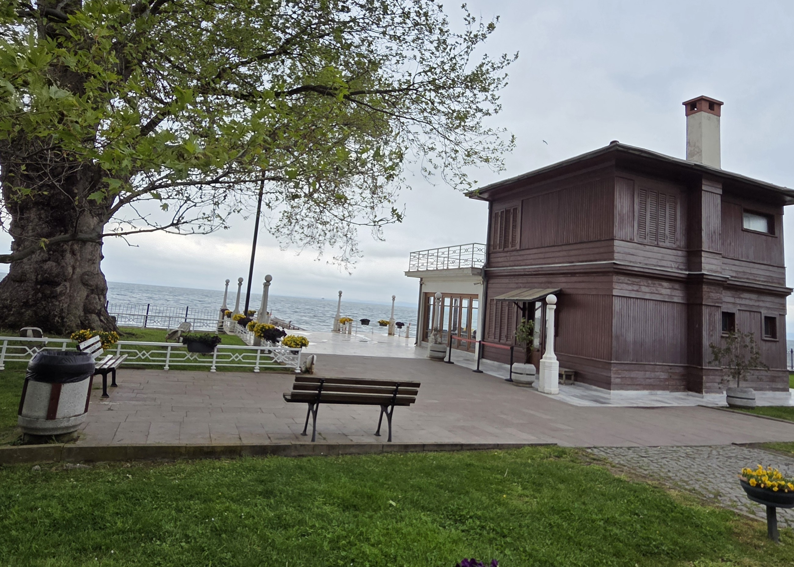
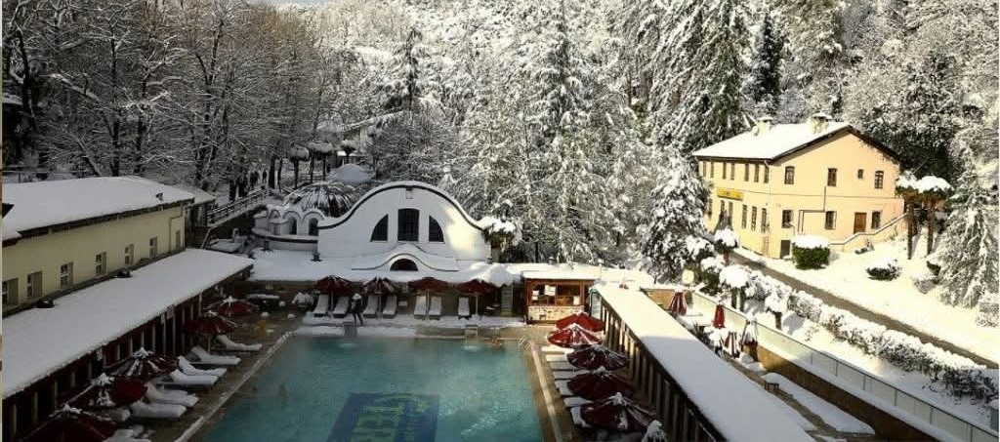

Explore Yalova
From historical mansions to natural waterfalls, Yalova offers a variety of attractions for every traveler. Click on the sections below to learn more about each destination.

The Walking Mansion
A historical mansion famous for being moved on rails to save a plane tree.
Go to Page »

Termal Hot Springs
Healing thermal waters and historical baths dating back to the Roman era.
Go to Page »
Sudüşen Waterfall
A magnificent waterfall hidden in the forest, perfect for nature lovers and trekking.
Go to Page »

Çınarcık Beach
The most popular summer destination in Yalova with its long coastline and nightlife.
Go to Page »